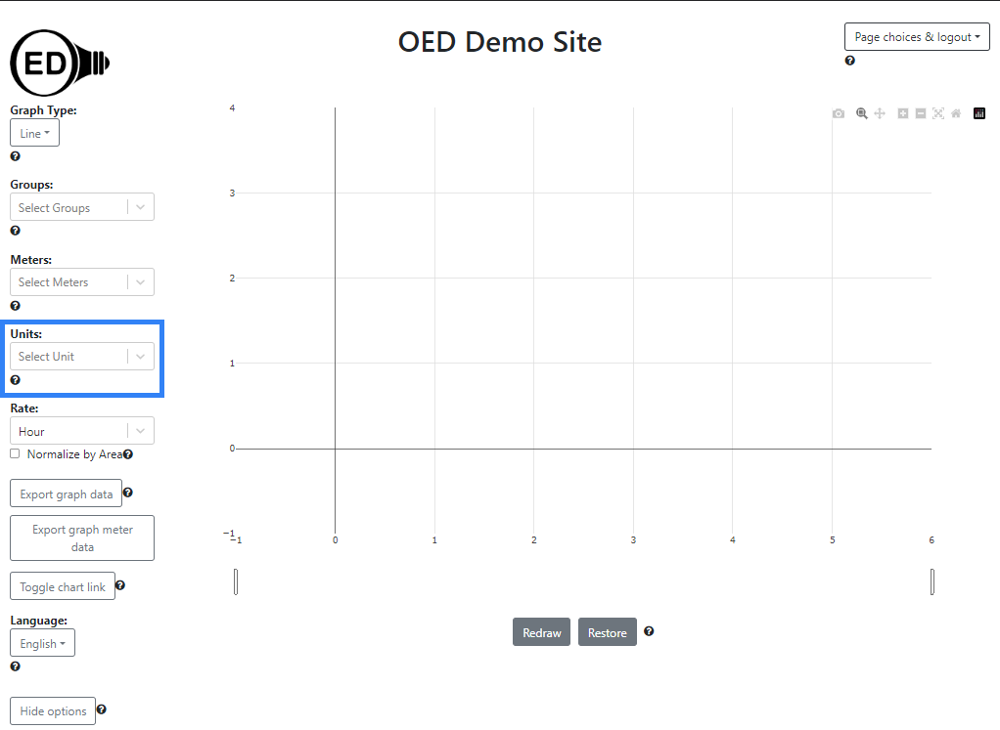
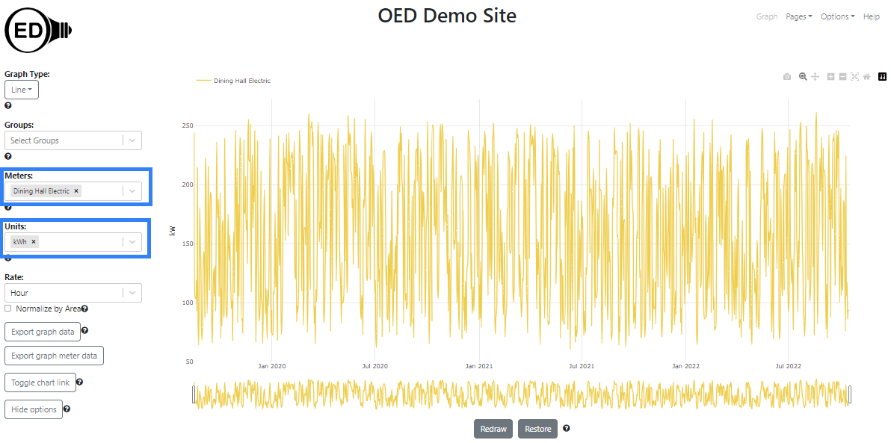
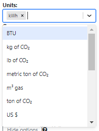
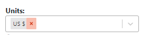
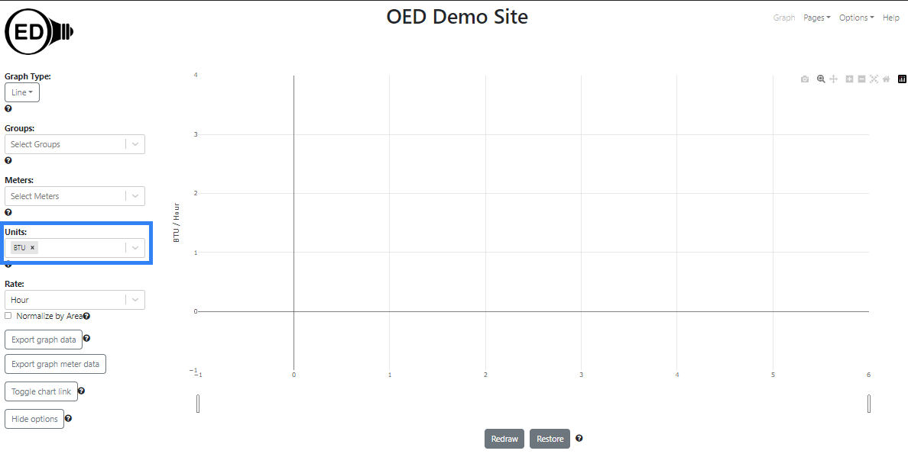

The unit menu on each graphic page is shown in the following figure (highlighted in blue box):

As shown, when you first load OED there is no graphic unit so it has "Select Unit". If the user selects a meter or group, then the default graphic unit associated with that meter or group will become the current unit. In the following figure, "Dining Hall Electric" was selected so OED automatically sets the units to "kWh". (Both shown in blue rectangle.) The y-axis graphing unit on this line graphic is the related flow unit of kW (see below).

Clicking on the down arrow to reveal the "Units:"" options will show all units and their status for the selected meter(s)/group(s) as show in this figure for the allowed units (they all just happen to fit in the dropdown display size):

For the selected meter of "Dining Hall Electric", there are seven allowed units starting with "BTU" and ending with "US $" plus the already selected one of "kWh". Note the order of units is alphabetical withing each category. These are the seven units that are compatible in which you can graph the selected meters/groups. If you scroll down in the dropdown menu, you will see the incompatible (or not allowed) units. These are the units that cannot be used for graphing these meters/groups even though they are available at this site. There is a separation label "-----Incompatible Units-----" and these units are shown grayed out so they cannot be selected. With the selected meter, their are nine incompatible units starting with Celsius and going to ton. In the following figure you can only see the first five through "kW". The remaining ones could be seen by scrolling the dropdown choices.
Any allowed unit can be selected to update the displayed graphic unit. As shown in the following figure, "US $" was selected and the y-axis label became "US $/hour". (see below)

Selecting additional meters/groups will not change the graphic unit on the "Units" menu but it can alter the allowed/incompatible units that are displayed. This is due to the fact that the allowed units are those that are allowed for all meters and groups selected. See TODO for more information.
At times you may want to clear all selected meters and groups to restart anew. If you click the "x" next to the selected unit, as shown in the following figure, it will do this. The place to click is red as is automatically done when you hover over the "x". It will also clear the unit and reset it back to "Select Unit". Overall, this will put it back to the initial page when OED was loaded as shown at the top of this page.

While less common, one can select a unit before any meter/group when it has "Select Unit". When this is done, the y-axis label is updated but nothing is graphed. In the following figure, the "Units" was set to "BTU" (shown in blue rectangle) and the y-axis label became "BTU/Hour":

One can select the graphing unit on any graphing page. The selected unit will remain active for all graphing pages until it is changed.
OED selects the appropriate y-axis unit based on the graphing unit (and the graphing rate for line graphics). There are three types of units that OED uses:
Each type of graphic has a y-axis unit that it wants to graph:
An easy way to see all available graphing units is to use the "Units" dropdown menu when no meter/group is selected. Since all units are allowed, they will all be seen. You can also see at any time but once a meter/group is selected it is likely they are separated by allowed/incompatible.
The "Units" menu allows for incremental search as usual in OED menus. Typing character will limit the options. Note if you do this and don't select an option, OED will set the unit to "Select Unit" and clear all your selected meters/groups. To avoid this, delete the character(s) entered for the search to get back to just the previously selected unit.